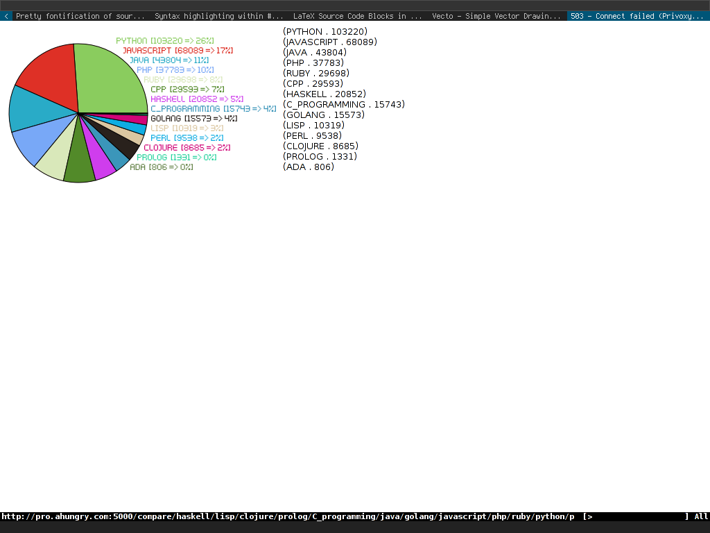

We'll assume the following:
For this web app, we're going to make use of a great web framework called caveman2.
The basic idea, when all done, is to run a persistent web app (similar to a UNIX daemon). This is common in many non-web languages for their web based applications, and rare in web or scripting (interpreted) style languages, such as PHP.
The app responds to requests via it's own built in webserver (think a miniature Apache).
If you get lost during this tutorial, you can see a complete code set for the project at https://github.com/ahungry/language-popularity - either use the github page and view the individual file, or perform your own checkout/fork of the repo if you like (just note that I use ~/src/lisp instead of ~/quicklisp/local-projects throughout my own codebase).
You can play with the complete app on my server here (manually update the URL and see what happens!):
To start, we're going to open up our REPL (read-eval-print-loop) and load up the caveman2 package.
In the REPL, type:
(ql:quickload :caveman2) (caveman2:make-project "~/quicklisp/local-projects/language-popularity" :author "Your Name" :email "Your Email") (ql:quickload :language-popularity) (language-popularity:start :port 5000)
This is going to create a project skeleton for a caveman2 app in the directory referenced in the #'make-project call, as well as begin the web server on port 5000.
You can test that it worked by visiting the barebones app in your browser by visiting http://localhost:5000.
You should see a message about welcome to caveman2 and a link to some caveman2 documentation.
Having a default page is all well and good, however you're likely here as you'd like to make something a little more involved.
When referring to any files from here on out, I'll assume you can find your project directory you created in the last step (~/quicklisp/local-projects/language-popularity), so I'll be referring to the files you can open/work on relative to that location.
So…moving on, open up src/web.lisp and go down past the initial default route `(defroute "/" ()…' and add the following:
(defroute "/compare/*" (&key splat) (format nil "We saw this in the URL: ~a" (car splat)))
Make sure to press C-c C-c in emacs (you ARE using emacs for this right?) to compile the new route into your running SLIME instance.
If not, you'll need to use your editor's slime/swank integration, or restart your Common Lisp instance after each edit/save and re-quickload your project.
Visit your new route at http://localhost:5000/compare/haskell/lisp
You should see how the route was able to match on a wildcard and pluck out the star match and store it into the `splat' variable.
As you may have guessed, based on the project name (language-popularity) and the custom route definition, we're going to be checking on how two (or more) languages stack up with each other in terms of their `popularity' (or at least how many reddit subscribers each has).
We're going to do a little bit of setup work with the caveman2 framework. For whatever reason, it doesn't create a src/model.lisp file in the project skeleton (it has src/db.lisp, but this is database setup related).
Make a new file (src/model.lisp) and add the following:
(in-package :cl-user) (defpackage language-popularity.model (:use :cl :cl-json :drakma :vecto :md5 :split-sequence) (:import-from :language-popularity.config :config) (:export :get-language-sub-stats :pie-chart)) (in-package :language-popularity.model)
You can go across each s-expression (top level (…) block) and C-c C-c to add it to the running REPL instance (or reload everything).
Now, to make sure reloads work properly, you'll also want to update language-popularity.asd as so (find the :components area):
:components ((:file "main" :depends-on ("config" "view" "db")) (:file "web" :depends-on ("model" "view")) (:file "model" :depends-on ("config")) (:file "view" :depends-on ("config")) (:file "db" :depends-on ("config"))
We added the model line, as well as a dependency on the model to the web line.
Make sure to add the model include into src/web.lisp as well (up near the top):
(in-package :cl-user) (defpackage language-popularity.web (:use :cl :caveman2 :language-popularity.config :language-popularity.view :language-popularity.db :language-popularity.model :datafly :sxql :split-sequence :md5) (:export :*web*)) (in-package :language-popularity.web)
For this we're going to tap into a few third party libraries (all available via Quicklisp) to make our life easier.
This is done by either directly typing:
(ql:quickload :library-name-here)
or by adding to the language-popularity.asd file (ASDF - Another System Definition Facility) and including in the :use portion of our defpackage.
Now we should have a language-popularity.asd file that looks like:
:sxql ;; for other tasks :drakma :cl-json :split-sequence :vecto :md5)
and a defpackage in src/model.lisp that looks like:
(defpackage language-popularity.model (:use :cl :cl-json :drakma :vecto :md5 :split-sequence) (:import-from :language-popularity.config :config) (:export :get-language-sub-stats :pie-chart))
Ignore the #'pie-chart and :vecto portions will come later, so lets just add a stub/placeholder function for that for now (in src/model.lisp), as well as a very basic class structure for our Language type class (classes in Common Lisp are done via a system called CLOS, which is very awesome, but we're mainly using it as an easy way to store and reference values):
(defclass Language () ((Subscribers :accessor subs :initarg :subs :initform 0) (Last-Updated :accessor last-updated :initarg :last-updated :initform 0) (About :accessor about :initarg :about :initform "Some details about the language.")) (:documentation "Language stats and details")) (defun pie-chart (slices) slices)
Next up, we need some functions to:
Add this next (still in src/model.lisp unless I say otherwise!):
(defun char-vector-to-string (v) (format nil "~{~a~}" (mapcar #'code-char (coerce v 'list)))) (defun remote-json-request (uri) "Pull in remote JSON. Drakma returns it as a large vector of character codes, so we have to parse it out to string form for cl-json." (let* ((json-response-raw (http-request uri)) (json-response-string (char-vector-to-string json-response-raw)) (json (decode-json-from-string json-response-string))) json)
The #'http-request function is courtesy of drakma (similar to CURL in other languages), while #'decode-json-from-string is from cl-json.
Also, for the Common Lisp novices, #' is a way to refer to a function, so I'll typically add it in front to distinguish it as such.
The drakma #'http-request gives a vector set of ASCII character codes, so our little #'char-vector-to-string changes it to a basic JSON string.
Now that we have a way to remotely request some parsed out JSON, we can tap into the reddit endpoints and store some instances of our new Language objects with actual data.
For this, we'll just throw them in a hash table, as it'll give us an easy way to query out details based on a language name.
Add this:
(defparameter *language-stats* (make-hash-table :test #'equal)) (defconstant +cache-time+ (* 60 60)) ;; 1 hour (defmacro jkey (k &rest rest) `(cdr (assoc ,k ,@rest))) (defun set-language-stats (language) "Build language stats into our lang class via external sources of popularity." (let ((lang-class (or (gethash language *language-stats*) (make-instance 'Language)))) (when (> (- (get-universal-time) (last-updated lang-class)) +cache-time+) (let ((reddit-json (remote-json-request (format nil "http://reddit.com/r/~a/about.json" language)))) (when (jkey :subscribers (jkey :data reddit-json)) (setf (subs lang-class) (jkey :subscribers (jkey :data reddit-json)))) (setf (last-updated lang-class) (get-universal-time)))) (setf (gethash language *language-stats*) lang-class) (cons (intern (string-upcase language)) (subs lang-class))))
Holy freaking function Batman! May be your first reaction to seeing this abomination of a function; I assure you it's not so bad, although sometimes due to the interactive nature of the Common Lisp REPL and adding little pieces at a time, it is easy to get carried away and not properly modularize enough of the code.
So, lets take it line by line.
The language-stats and cache-time parameter and constants are there for storing Language objects in the former, and keeping our API requests to reddit down in the latter.
The macro #'jkey (ehh…not a function, but I'll steal the #' syntax) is to reduce verbosity in the #'set-language-stats by a small amount.
It lets us quickly reference nested keys in a JSON alist created by cl-json.
Now we enter the beast (I mean #'set-language-stats). It takes a single parameter/argument (language) and runs a JSON request to http://reddit.com/r/language/about.json, as long as it's been at least an hour since our last request (restarting the instance of your implementation is obviously going to reset this).
When the subscriber key exists (if you request an invalid endpoint, it won't), it will update the Language object's Subscribers slot.
Following the subscriber update, it adds (or updates) the language's value under it's name key in the language-stats parameter (yea, yea, global state, mutability, not ideal, I get it).
Finally, after all of that, we have a little laziness tossed in. The function ends up returning a cons of the language name interned (so "haskell" becomes HASKELL) and the subscriber count.
I hope you took a break after the last segment, it was a doozy.
Next up, we're going to see some beauty in how terse Common Lisp can be when making use of some defined functions.
Add the following to src/model.lisp:
(defun get-language-sub-stats (language-list) "Pull out the stats for a variety of languages listed" (sort (mapcar #'set-language-stats language-list) #'> :key #'cdr))
This gives us a function that we can pass a list of languages to (in format such as (list "haskell" "lisp" "clojure"), and receive a sorted (by subscriber count) list of subscribers (remember how we awkwardly had #'set-language-stats returning a cons of a name and sub count?)
Hop on over to src/web.lisp and lets update our route to handle this:
(defroute "/compare/*" (&key splat) (let* ((language-list (remove "" (split-sequence #\/ (car splat)) :test #'equal)) (stats (get-language-sub-stats language-list))) (format nil "<div style='font-size:.8em;'>~{~a<br>~%~}</div>" (get-language-sub-stats language-list))))
You may have to add :split-sequence up in the defpackage (I'll leave that as an exercise for the reader) before you recompile this route, as we use it here in the web file/package.
Our language-list is built from our splat value (haskell/lisp/clojure), split based on the slash `/' and then cleaned up for any empty values that slipped in.
When you visit http://localhost:5000/compare/haskell/lisp/clojure you should now see a page that lists out the subscriber counts (sorted) of the 3 different programming languages (hopefully this guide will help lisp get a minor boost!).
Remember the reference to the vecto library? It's time to have some pie (chart) with our web app.
I'm not going to break down the vecto library calls, as the API Documentation for Vecto is actually quite amazing, and does a better job than I ever could.
So, hop on over to src/model.lisp and add the following:
(defun md5-as-string (md5-vector) "Convert an md5-vector, as generated by md5sum-file or md5sum-string \ into a plain string for easy comparison" (string-downcase (format nil "~{~2,'0x~}" (coerce md5-vector 'list)))) (defun pie-chart (slices) "Parse the data, make a pretty chart" (let* ((base (md5-as-string (md5sum-string (format nil "~{~a~}" (mapcar #'car slices))))) (file (format nil "~~/quicklisp/local-projects/language-popularity/static/images/~a.png" base))) (with-canvas (:width 400 :height 250) (set-rgb-fill 1.0 0 0) (centered-circle-path 105 125 100) (fill-path) (set-font (get-font "~/quicklisp/local-projects/language-popularity/fonts/kenpixel.ttf") 10) (let ((ratios slices) (sum (reduce #'+ slices :key #'cdr)) (last-theta 0)) (dotimes (i (length ratios)) (with-graphics-state (let* ((ratio (/ (cdr (nth i ratios)) sum)) (name (car (nth i ratios))) (t1 last-theta) (t2 (+ t1 (* (/ pi 180) (* 360 ratio))))) (setf last-theta t2) (flet ((rco () (float (/ (random 100) 100)))) (set-rgba-fill (rco) (rco) (rco) 1)) (move-to 105 125) (arc 105 125 100 t1 t2) (fill-and-stroke) (draw-string (+ 160 (if (< i 5) (* i 10) (if (> i 10) (- 50 (* (- i 10) 10)) 50))) (- 225 (* i 14)) (format nil "~a [~a => ~a%]" (prin1-to-string name) (cdr (nth i ratios)) (round (* 100 (float ratio))))) )))) (save-png file) base)))
Two things are going on here; we're creating a filename to store our image in based on the md5 of our passed in list, and we're drawing a pie chart.
For this segment to work, you need to have a .ttf file available and point your #'get-font call to it.
Then you should revisit src/web.lisp and update defroute to this:
(defroute "/compare/*" (&key splat) (let* ((language-list (remove "" (split-sequence #\/ (car splat)) :test #'equal)) (stats (get-language-sub-stats language-list)) (pie-name (pie-chart stats))) (format nil "<img src='/images/~a.png' style='float:left;'> <div style='font-size:.8em;'>~{~a<br>~%~}</div>" pie-name (get-language-sub-stats language-list))))
so that when users visit your page, they see something amazing like this image at a link like this:
